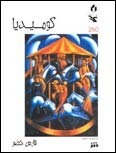
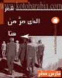
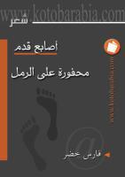
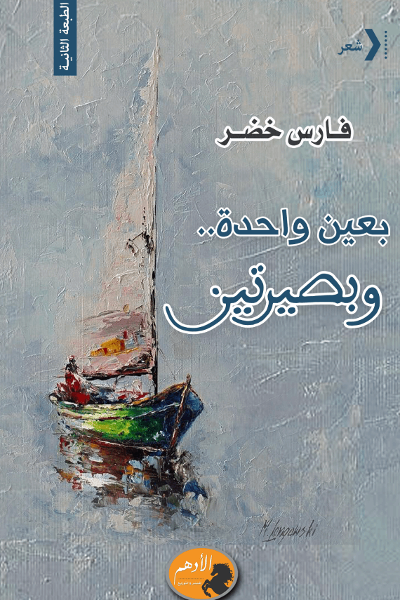
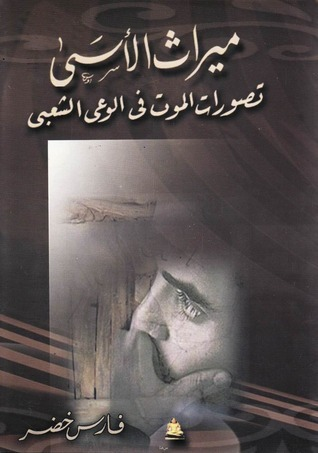
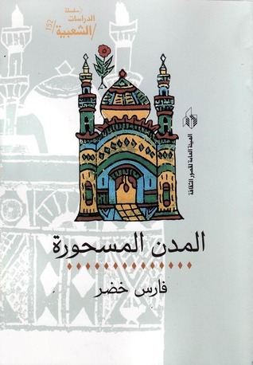
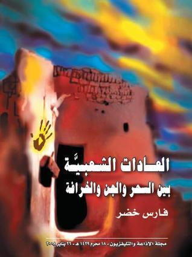
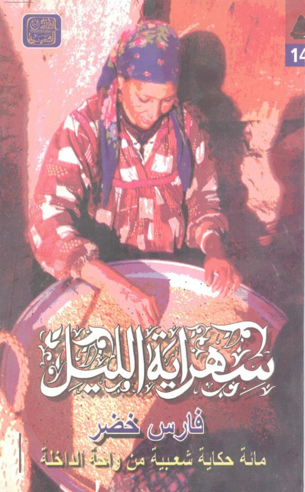

فارس خضر، شاعر مصري بارز، ولد عام 1969. حاصل على درجة الماجستير بتقدير امتياز عام 2003، وعلى درجة الدكتوراه في المعتقدات الشعبية بعنوان "حكايات المدن المسحورة بين المدون والشفاهي".
باحث متخصص في الفولكلور المصري، يشغل منصب نائب رئيس تحرير مجلة "الإذاعة والتليفزيون"، ورئيس تحرير مجلة الشعر المصرية. وهو عضو مؤسس في جماعة شعراء غضب.
يكره الرومانسية برؤيتها الواهنة التي تنظر إلى الحياة بمنظار يجردها من فكرة الصراع. يرى أن قصيدة النثر متسيدة المشهد الأدبي، لأنها ابنة العقل الكتابي بنقائه ورسوخه.
تنقل بين أجواء مصرية ما بين صحراوية ونيلية وحضرية، ورصد هذه الفترة شعرياً بصدقٍ لا يزيف الواقع.

الديوان الأول للشاعر، يحمل في طياته الحزن العميق رغم عنوانه المفارق. قصيدة النثر تتجلى بأقصى درجات الصدق.
اطلع على النصوص →
رحلة شعرية عبر الذاكرة والوجدان، حيث يرصد الشاعر لحظات عابرة تترك أثراً خالداً.
اطلع على النصوص →
تأملات في الزمن والوجود، حيث يحفر الشاعر أثره في رمال الذاكرة قبل أن تمحوها الرياح.
اطلع على النصوص →
أحدث دواوين الشاعر، صدر عن دار الأدهم. رؤية مشحونة بالحزن والقسوة تبادلت فيها هموم إنسانية عامة وخاصة.
اطلع على النصوص →
دراسة عميقة في تصورات الموت ضمن الوعي الشعبي المصري، تقدم قراءة أنثروبولوجية راقية.
المزيد →
رسالة الدكتوراه التي حصل بها الشاعر، تستكشف حكايات المدن المسحورة بين المدون والشفاهي.
المزيد →
دراسة في العادات الشعبية بين السحر والجن والشعوذة، ترصد الموروث الشعبي المصري بعمق.
المزيد →
مائة حكاية شعبية من واحة الداخلة، تجمع بين المتعة والقيمة الأنثروبولوجية.
المزيد →